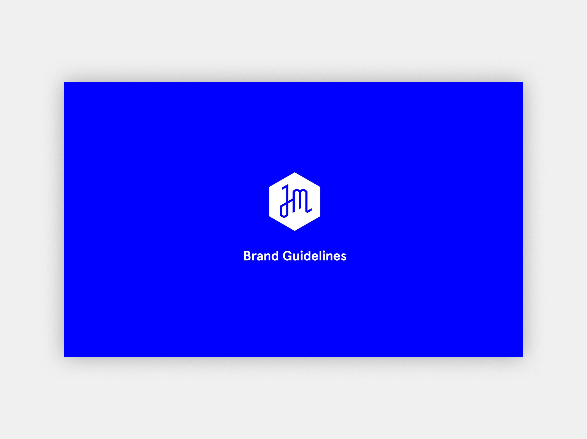

Internship Work
Jewish Museum Brand Guidelines, PDF.

I noticed that the Jewish Museum's brand guidelines were out-of-date while interning with them in the summer of 2018. I brought it up with my Creative Director, Roy Rub, and together we created a self-led project to design a new style guide by the end of my stay at the Museum.


I established the new brand standards with Roy and collected examples of up-to-date brand materials from the previous year. Then, I systematized the data, wrote blurbs for each category, and set it all in a 40-page PDF, which covered graphic treatments throughout all Museum departments.

Selected work from the Jewish Museum.


Selected work from the New York Botanical Garden.